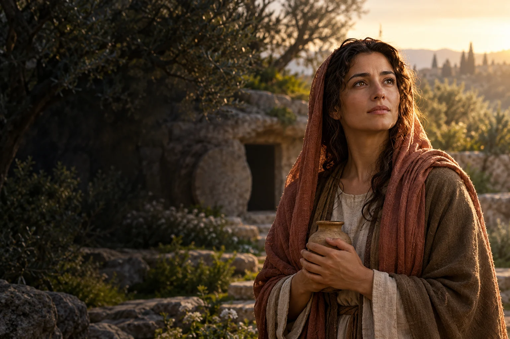

Pozostań blisko
Odezwij się do osoby przeżywającej stratę i zapytaj, jak możesz jej towarzyszyć.

I wiek
Obchód liturgiczny: 22 lipca
Uczennica Jezusa i świadek zmartwychwstania.
Maria Magdalena była uczennicą Jezusa i świadkiem Jego śmierci oraz zmartwychwstania, której Ewangelie powierzają szczególne miejsce w opowieści wielkanocnej.
Poznaj historię jej życia →Wierność i nadzieja mogą prowadzić przez stratę ku spotkaniu oraz dzieleniu się świadectwem.
Refleksja redakcji W Modlitwie.Ewangelia Łukasza przedstawia ją wśród kobiet towarzyszących Jezusowi.
Należy do grona osób wspierających Jego działalność.
Relacje ewangeliczne wymieniają ją przy śmierci Jezusa.
W poranek wielkanocny przychodzi do grobu.
Według Ewangelii Jana przekazuje uczniom wiadomość o spotkaniu ze Zmartwychwstałym.
Obchód 22 lipca podniesiono do rangi święta.
 Współczesne wyobrażenie artystyczne.
Współczesne wyobrażenie artystyczne.Około 3 min czytania · 5 rozdziałów
O Marii Magdalenie wiemy przede wszystkim z Ewangelii. Jej przydomek wiąże ją z Magdalą. Ewangelia Łukasza wymienia ją wśród kobiet towarzyszących Jezusowi i wspierających Jego działalność. Podaje też, że Jezus uwolnił ją od siedmiu złych duchów. Teksty nie podają pewnej daty jej narodzin ani szczegółowej biografii.
Przydomek nie daje pełnego obrazu jej pochodzenia ani rodziny. Najstarsze teksty podają wybrane informacje potrzebne do opowiedzenia o działalności Jezusa. Dlatego w tej biografii pozostają miejsca, których nie można uczciwie wypełnić szczegółami.
Maria pojawia się w gronie osób idących za Jezusem. Ewangelie nie opisują całej jej drogi, ale pokazują, że należała do wspólnoty słuchającej Jego nauczania. Warto zachować te granice wiedzy: późniejsze opowieści rozwijały jej historię na różne sposoby, nie zawsze pozwalające ustalić wydarzenia historyczne. Ewangeliczne świadectwo skupia się na spotkaniu z Jezusem i wierności uczennicy.
Łukasz umieszcza Marię obok innych kobiet, które towarzyszyły Jezusowi i uczniom. Ich obecność pozwala zobaczyć wspólnotę szerszą niż samo grono Dwunastu. Ewangelie wspominają o ich służbie, nie opisując wszystkich codziennych zadań.
Relacje ewangeliczne wymieniają Marię Magdalenę wśród kobiet obecnych przy ukrzyżowaniu i związanych z miejscem pogrzebu Jezusa. W poranek pierwszego dnia tygodnia przychodzi do grobu. Poszczególni ewangeliści inaczej rozkładają akcenty opowieści, ale jej obecność przy wydarzeniach paschalnych jest wyraźna. Jest świadkiem tego, co wspólnota chrześcijańska uznaje za centrum swojej wiary.
Obecność w opowieści o męce jest ważna także dlatego, że Maria pojawia się później w relacji o pustym grobie. Teksty prowadzą czytelnika od doświadczenia straty do wiadomości o zmartwychwstaniu, zachowując różnice między relacjami poszczególnych ewangelistów.
Ewangelia Jana przedstawia spotkanie Marii ze zmartwychwstałym Jezusem oraz jej misję przekazania wiadomości uczniom. W tradycji chrześcijańskiej nazywano ją apostołką apostołów: otrzymała zadanie ogłoszenia im tego, czego była świadkiem. Określenie podkreśla rolę świadka i posłanej, nie zmieniając historycznej listy Dwunastu.
W relacji Janowej Maria nie zachowuje spotkania wyłącznie dla siebie, lecz idzie do uczniów. Kościelne określenie apostołka apostołów odwołuje się do tego zadania. Jest interpretacją jej misji obecną w tradycji, a nie dodatkową informacją biograficzną.
W dziejach zachodniego chrześcijaństwa Marię z Magdali utożsamiano również z innymi kobietami ewangelicznymi; same teksty nie uzasadniają prostego utożsamienia wszystkich tych postaci. Jej wspomnienie 22 lipca w 2016 roku podniesiono w ogólnym kalendarzu rzymskim do rangi święta. Dziedzictwem Marii pozostaje ewangeliczne świadectwo obecności, spotkania i przekazania dobrej nowiny.
Dekret z 2016 roku nie zmienił dnia obchodu. Zwrócił uwagę na jej świadectwo i znaczenie kobiet w życiu Kościoła. Współczesna liturgia pomaga odczytać Marię z Magdali na podstawie jej własnej obecności w Ewangeliach.
O jej życiu po wydarzeniach wielkanocnych powstały różne tradycje, lecz nie mają one tej samej podstawy co relacje ewangeliczne. Rozróżnienie świadectwa biblijnego i późniejszych opowieści pozwala uniknąć dopisywania szczegółów. Dzięki temu postać Marii może pozostać bliska bez udawania, że znamy całą jej historię.
Odezwij się do osoby przeżywającej stratę i zapytaj, jak możesz jej towarzyszyć.

Przeczytaj ewangeliczną opowieść o Marii Magdalenie, zwracając uwagę na jej własne słowa i działania.

Podziel się z kimś wiadomością, która daje Ci nadzieję, bez narzucania jej odbiorcy.
Ojcze nasz, któryś jest w niebie, święć się imię Twoje; przyjdź królestwo Twoje; bądź wola Twoja jako w niebie, tak i na ziemi. Chleba naszego powszedniego daj nam dzisiaj; i odpuść nam nasze winy, jako i my odpuszczamy naszym winowajcom; i nie wódź nas na pokuszenie, ale nas zbaw ode złego. Amen.
Tradycyjny tekst modlitwy; utrwalony polski wariant.Ojcze nasz →